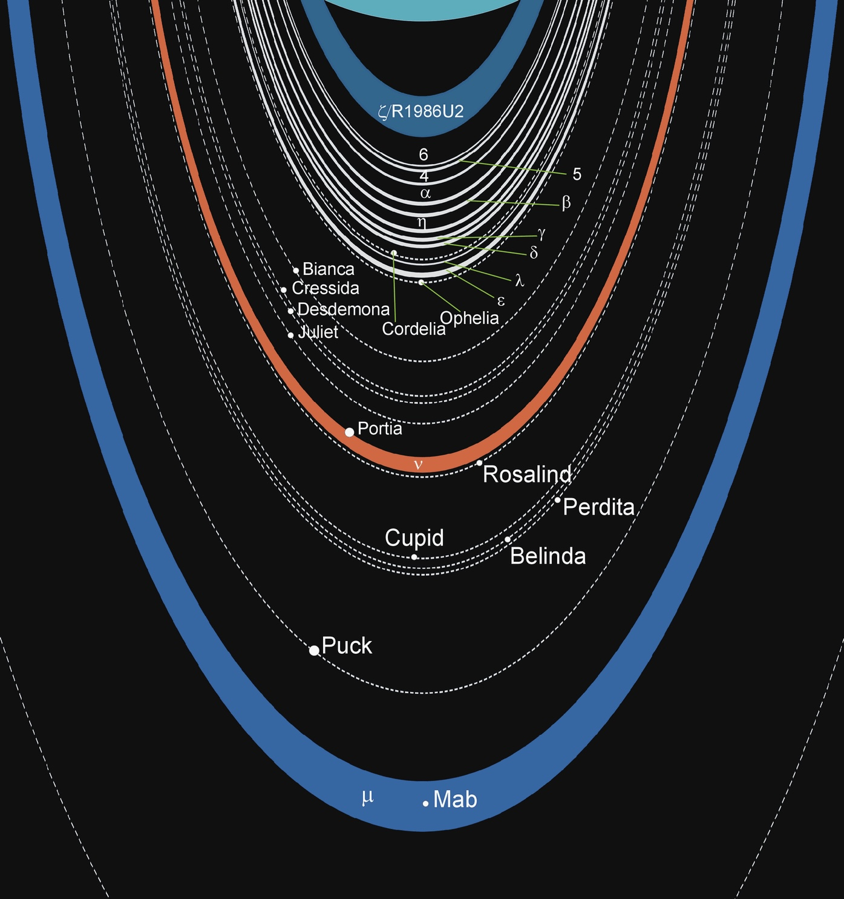

天王星是太阳系八大行星中的第七个行星，介于土星与海王星之间，是太阳系中唯一躺着运转的行星。 天王星是在1781年由英国天文学家威廉赫歇尔所发现的。天王星与太阳的距离已经非常遥远了，太阳光从太阳发出到达天王星需要经过2.7小时之久。天王星绕行太阳则需要约84年才能绕完一圈。天王星也是类木行星之一。
蓝绿色天王星是以气体为主要成份的类木行星，因此表面没有明显的地形结构。蓝蓝的一片看起来十分完美，表面没有像木星以及土星所拥有的明显环状结构。由哈伯太空望远镜的观察显示，天王星的表面事实上也有云的结构。
天王星的大气成份绝大部分为氢，另外还有甲烷、氦等等。表面重力达8.9m/s2，比地球的9.8m/s2略小 。由於距离太阳已经十分遥远了，天王星表面的温度约为-200度，十分寒冷。
来源：https://baike.baidu.com/item/天王星/21805?fr=aladdin
天王星中心可能有个由冰和岩石所组成的核，外层则有气体和冰混杂组成的浓密大气。天王星的自转轴倾斜了９８度，换言之，天王星是横躺着绕太阳公转。天王星的所有卫星也都因其自转轴倾斜而倾斜的赤道面上公转。天王星的磁场轴也偏离了自转轴有６０度左右。
来源：https://zhidao.baidu.com/question/522124905421072805.html
天王星也拥有环。天王星种共有１１个环，但每个环都细细的，只有几十公里宽，不如土星环宽厚。
天王星总共有27个卫星，其中五个比较大。最靠内侧的米兰达是最引人注意的大卫星。这个卫星半径虽然只有２５０公里左右，但其表面遍布着似乎被某种东西划过的巨大地形。以及深达２０公里的沟渠。直径宽达１６１０公里的天王星最大卫星泰塔尼亚的表面很少陨石坑，科学家怀疑它比较晚近的时期曾经发生过某种地质活动，但仍未得到确切的答案。
天王星的卫星示意图

来源：https://baike.baidu.com/item/天王星/21805?fr=aladdin